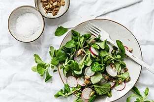
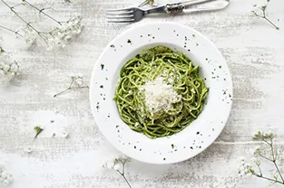
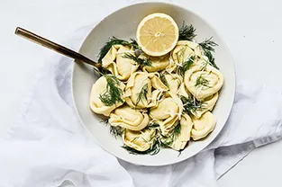
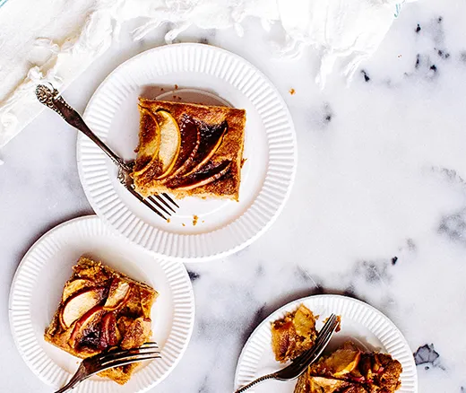

Bananas Foster Ice Cream Cake
If you're looking for decadence, look no further — you've found the Holy
Grail of desserts. Honestly, this cake makes us wonder why Bananas Foster hasn't always been
served on top of ice cream cake.

Raspberry & Cream Frozen Yogurt Pie
35 mins | 7 14

Raspberry & Cream Frozen Yogurt Pie
35 mins | 7 14

Raspberry & Cream Frozen Yogurt Pie
35 mins | 7 14

Bananas Foster Ice Cream Cake
15 mins difficulty:
easy
1 (8 ounce) container frozen whipped topping, thawed
20 chocolate round wafers, divided
1 (7 1/4 ounce) bottle Smucker's® Hot Dark Chocolate Microwaveable Topping, divided
Directions
ARRANGE 8 to 9 ice cream sandwiches in 9-inch square pan, cutting to form an even layer. Spread
with half of whipped topping. Break or crush chocolate wafers and sprinkle over the whipped
cream.
Microwave 1 cup of chocolate topping into small microwave-safe bowl on HIGH for 30 seconds.
Drizzle
evenly over wafers.
TOP with remaining 8 to 9 ice cream sandwiches to form an even layer. Spread with remaining
whipped
topping. Freeze 3 hours or overnight. Remove from freezer 10 minutes before serving. Cut into
squares.
HEAT remaining topping. Drizzle each serving with topping. Sprinkle with decorator sprinkles.
Nutritional information (amount per servings): Total Calories: 640. Sodium 440mg. Fat: 32g.
Carbohydrates: 82g. Cholesterol: 40mg. Protein: 11g. Fiber: 1g.վ